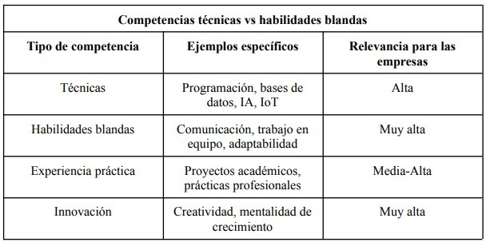

11 De la universidad al mundo laboral: lo que las empresas esperan de ti
Palabras clave: mercado laboral, recién egresado, empleabilidad, innovación.
11.1 Introducción
En un mundo donde la tecnología avanza con rapidez, la ingeniería en sistemas se perfila como una de las carreras con mayor proyección. La digitalización de sectores productivos, la automatización de procesos y la innovación han incrementado la demanda de profesionales capaces de diseñar e implementar soluciones tecnológicas eficientes, convirtiendo a estos ingenieros en actores clave del desarrollo empresarial.
Ante este panorama surge una pregunta esencial: ¿qué espera el mercado laboral de un ingeniero en sistemas recién egresado? Más allá de las bases en programación, redes y bases de datos, las empresas buscan un perfil integral que combine conocimientos técnicos, experiencia práctica, habilidades blandas y mentalidad innovadora para afrontar los retos de la transformación digital.
11.2 Artículo
Alta demanda laboral y versatilidad profesional
La carrera de ingeniería en sistemas es altamente demandada a nivel global. Los recién egresados encuentran oportunidades en sectores como salud, finanzas, educación, manufactura y comercio electrónico. Esta versatilidad implica que los profesionales deben adaptarse a distintos entornos, comprender las necesidades específicas de cada industria y traducirlas en soluciones tecnológicas efectivas (Valacich y Schneider 2021).
Competencias técnicas clave Los egresados deben dominar fundamentos de programación, bases de datos, arquitectura de software y redes. Sin embargo, el mercado actual valora también conocimientos en metodologías ágiles, ciberseguridad y tecnologías emergentes como inteligencia artificial, cómputo en la nube, análisis de datos e Internet de las Cosas (IoT). No se espera que sean expertos en todo, pero sí que tengan capacidad de aprendizaje continuo (Pressman y Maxim 2019).
Habilidades blandas como diferenciador Las empresas reconocen que el éxito no depende únicamente de lo técnico. La comunicación efectiva, el trabajo en equipo, la resolución de problemas y la adaptabilidad son competencias esenciales. Un recién egresado que pueda transmitir ideas con claridad y colaborar en equipos multidisciplinarios tendrá una ventaja competitiva (Marr 2021).
Innovación y mentalidad de crecimiento El mercado percibe a los jóvenes ingenieros como agentes de innovación. Se espera que aporten ideas frescas, cuestionen procesos tradicionales y propongan soluciones creativas. Aquellos con una mentalidad de crecimiento y disposición para aprender y mejorar constantemente encuentran mayores oportunidades de destacar en sus roles (Valacich y Schneider 2021).
Competencias técnicas vs. habilidades blandas A continuación, se presenta una tabla comparativa que sintetiza las principales competencias que las empresas valoran en un ingeniero en sistemas recién egresado.

Figura 11.1: Competencias técnicas y habilidades blandas en ingenieros en sistemas.
11.3 Conclusiones
El mercado laboral para los ingenieros en sistemas recién egresados exige un perfil integral que combine conocimientos técnicos sólidos, habilidades blandas y una mentalidad innovadora. Mientras que la programación, las bases de datos y las redes constituyen la base técnica, la comunicación, el trabajo en equipo y la adaptabilidad son determinantes para la integración en entornos profesionales. Asimismo, la experiencia práctica y la disposición para aprender constantemente permiten que los jóvenes egresados enfrenten con éxito los retos del mundo laboral. En este contexto, quienes logran unir lo técnico con lo interpersonal e innovador se convierten en profesionales competitivos capaces de generar valor y liderar la transformación digital de las organizaciones, asegurando así un crecimiento sostenido en su carrera profesional.
11.4 Referencias
[1] Laudon, Kenneth C., y Jane P. Laudon. Sistemas de información gerenciales. 16ª ed. México: Pearson, 2020.
[2] Marr, Bernard. Tecnología e innovación en la empresa digital. Londres: Kogan Page, 2021.
[3] Pressman, Roger S., y Bruce R. Maxim. Ingeniería de software: un enfoque práctico. 9ª ed. México: McGraw-Hill, 2019.
[4] Valacich, Joseph S., y Christoph Schneider. Information Systems Today: Managing in the Digital World. 9ª ed. México: Pearson, 2021.